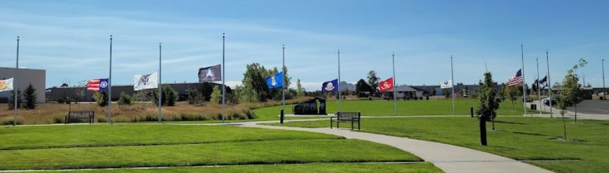
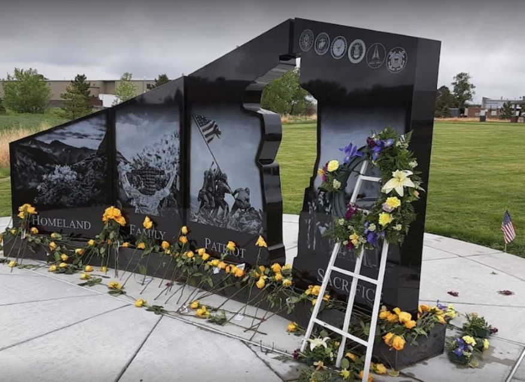

Aurora History
Aurora was incorporated as the town of Fletcher on April 30, 1891. The new town, one of many suburbs sprouting up around Denver, was four square miles of prairie reaching from Yosemite Street east to Peoria Street and 6th Avenue north to 26th Avenue. Named after one of the developers, Donald Fletcher, the town boasted 39 citizens, the beginnings of a water system and 14 new brick homes designed with indoor plumbing.
The high hopes of the new residents and the developers were short lived. A drought soon put an end to the water system and the Silver Panic of 1893 caused a severe drop in property values. Nonetheless, the town of Fletcher persisted and in 1907 the town was renamed Aurora. In 1928, after reaching a population of more than 2,000 citizens, the Colorado Secretary of State recognized Aurora as a city. The city seal has five stars on it, a feature kept from the original city emblem made to adorn a previous Municipal Building in the 1950s. The five stars represent home, church, school, business and industry, all essential to a healthy, progressive community, according to a guidebook published during the administration of Mayor Paul C. Beck (1967-74).
Growth boomed during the post-war years due primarily to the three military bases: Lowry Air Force Base, Fitzsimons Army Hospital, and Buckley Air Base. Since the 1970s Aurora has doubled in size and now occupies 160 square miles and has more than 386,000 residents. Aurora history is one of change, growth, diversity, and community.
Aurora's Military Heritage
Since the very early years of this city, the military has been a big part of Aurora's history. For almost 100 years, Aurora has been home to countless service men and women and their families. They are part of a rich heritage that makes up our community. Let's take time to honor those who have served and are serving our country in the armed forces.
In 1918 during the beginning of Aurora’s first building boom, Army General Hospital #21 (re-named Fitzsimons Army Hospital) was built east of town. Twenty years later, in 1938, Lowry Air Force Base was opened to the southwest of town. Rather than closing Fitzsimons, the U.S. government expanded and upgraded the hospital facilities in 1941 just in time to care for the wounded servicemen of World War II. Lowry expanded to a site 15 miles to the east in 1942 that eventually became Buckley Air National Guard Base and later Buckley Air Force Base.
Aurora is now home to the Colorado Freedom Memorial, dedicated in 2013 to honor all of those Colorado military personnel who have lost their lives in combat while serving our country.
